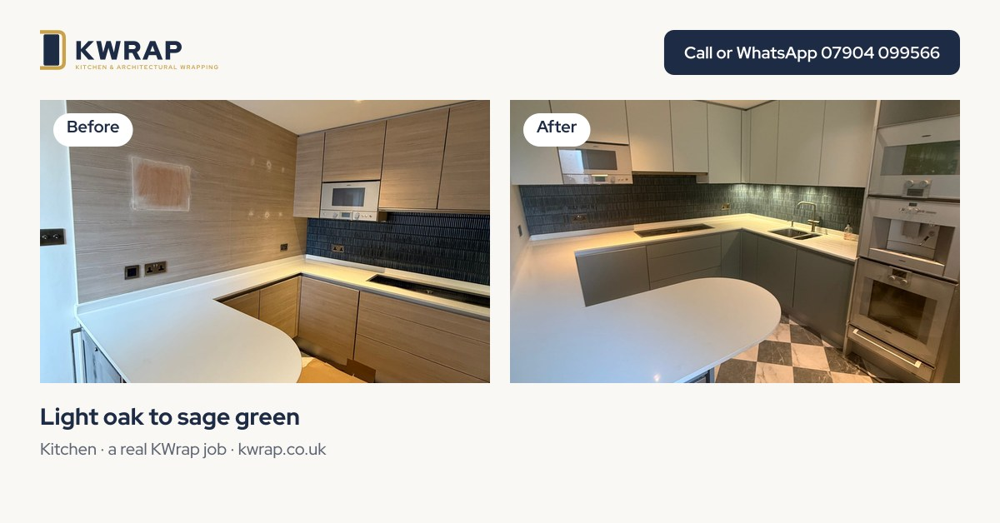

KWrap style guides
Kitchen wrap styles, one look at a time
Choosing a finish is the fun part of a wrap. These guides take one look at a time: what it suits, what to pair it with and what to watch for. From KWrap, the London kitchen wrapping specialist; browse every film in the KWrap colour library.

Colours
- Sage greenCalm, warm and easy to live with.
- Matt blackDramatic, and kinder to fingerprints than gloss.
- Navy and dark blueClassic with brass and light worktops.
- White and lightFor small, dark or north-facing rooms.
Textures and combinations
- Wood grainOak, walnut and painted woods.
- Marble and stone worktopsThe look of stone without the weight.
- Two-toneTwo finishes, one designed kitchen.
- Concrete and industrialGrey textures and metal accents.
Choose with real samples
Colours change with light. KWrap brings physical samples so you choose in your own kitchen, not from a screen. See kitchen wrapping.
Get a quote from KWrap
Send a few photos on WhatsApp, call, or use the quote form at kwrap.co.uk. Open 7am to 9pm, every day. 2-year guarantee on our work.